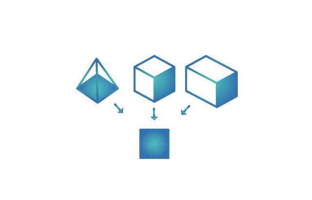

抽象化是用於問題表述的重要思維工具。抽象就是為了簡化，從而協助處理複雜性。這需要明確哪些才是問題的最重要方面，並隱藏無需關注的其他具體細節。重要的方面可用於創建正在處理的原始事項之模型或簡化表示。此後，便可使用此模型解決問題，而不必趕著處理全部的繁瑣細節。
一般意義上的抽象，是指忽略研究對象的具體的或無關的特性，而抽取其一般的或相關的特性。
(圖片來源：https://little-scientist-progect.weebly.com)。
電腦科學中的抽象包括數據抽象和控制抽象，簡言之就是將現實世界中的各種數量關係、空間關係、邏輯關係和處理過程等表示成電腦世界中的數據結構（數值、字符串、列表、堆棧、樹等）和控制結構（基本指令、順序執行、分支、循環、模塊等），或者說建立實際問題的計算模型。
另外，抽像還用於在不改變意義的前提下隱去或減少過多的具體細節，以便每次只關注少數幾個特性，從而有利於理解和處理複雜系統。
顯然，通過抽像還能發現一些看似不同的問題之間有共同的模式，從而建立相同的計算模型。
總之，抽像化是電腦科學中廣泛使用的思維方式，只要有可能並且合適，電腦科學家就會使用抽象化。電腦科學家經常使用多層次的抽象。
小學生經過學習都知道將應用題「原來有五個蘋果，吃掉兩個後還剩幾個？」抽象地表示成「剩下的蘋果\(\,=5-2\,\)」。這裡顯然只抽取了問題中的數量特性，完全忽略了蘋果的顏色或吃法等不相關特性。
地圖時中使用了抽象。地圖展示出現實世界的簡化版本，為我們省略了不必要的細節，例如公園中每棵樹的位置；並且僅保留了地圖閱讀所需的最相關信息，例如道路和街道名稱。
數字裝置應用抽象，盡可能多地隱藏用戶不需要的信息。假設你在露營活動中拍攝了一張漂亮的風景照片，而現在要在電腦上進行編輯並調整顏色。通常，可通過打開圖片編輯程序並調整一些顏色滑塊或選擇濾鏡來實現此目的。 執行此操作時，電腦機隱藏了這個操作背後的許多複雜操作。
在電腦中，所拍攝的照片會存儲為像素列表，每個像素均呈現一個不同顏色，每一顏色均用一組數字表示，每一數字均存儲為二進制數。這蘊藏著大量信息。要調整顏色，就要查看每一個像素，查看每一個色值，並逐一更改！ 這就是電腦替你完成的事情。但鑑於完成目標並不需要你了解這些情況，電腦便把相關信息均隱藏起來。